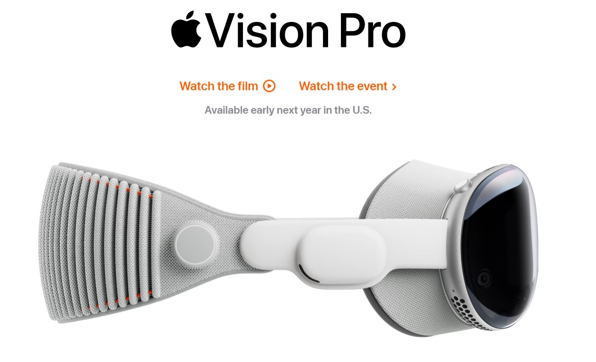
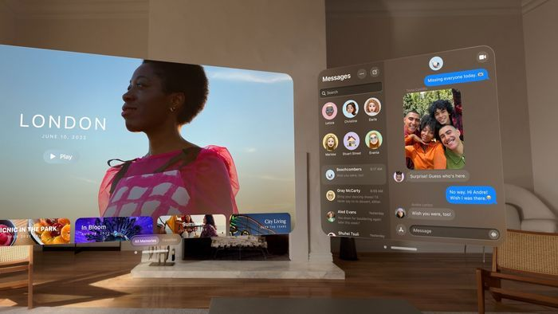
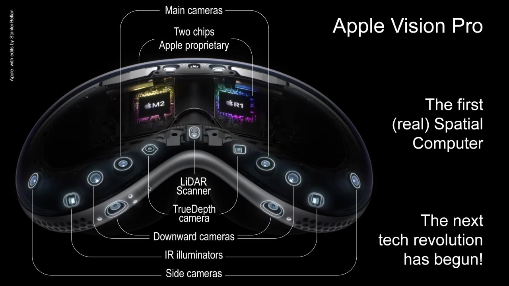
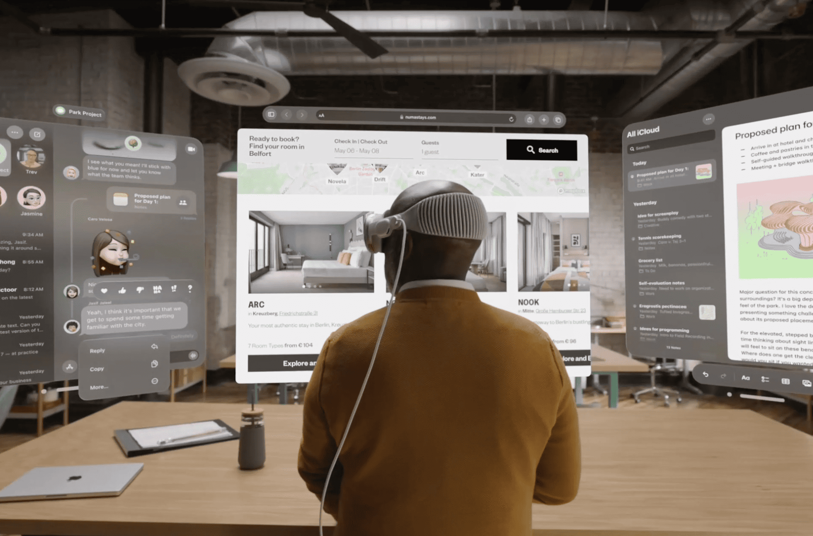

Uno de los productos mas revolucionarios, diseñado para
revolucionar la manera en que interactuamos con el mundo digital a través de la realidad aumentada (AR)
y la realidad virtual (VR).

Diseño Avanzado
Vision Pro cuenta con pantallas de alta resolución para ofrecer una experiencia visual inmersiva, con
colores vibrantes y detalles nítidos. Diseñado para ser cómodo durante largos periodos de uso, con
materiales ligeros y un ajuste ergonómico.

Tecnología de Realidad Aumentada y Virtual
Integración con ARKit y VRKit de Apple, permitiendo a los desarrolladores crear aplicaciones
inmersivas y experiencias interactivas. Equipado con una variedad de sensores y cámaras para
rastrear el entorno y los movimientos del usuario.

Procesamiento Potente
Impulsado por el chip Apple Silicon de última generación, Vision Pro ofrece un rendimiento potente y
eficiente, capaz de manejar aplicaciones exigentes y gráficos intensivos. Configuraciones de memoria
y almacenamiento adecuadas para soportar aplicaciones avanzadas.

Interacción Natural
Los usuarios pueden interactuar con Vision Pro mediante gestos y comandos de voz, eliminando la
necesidad de controladores físicos. Utiliza tecnología avanzada de reconocimiento facial y ocular
para ofrecer una interacción más natural y personalizada.